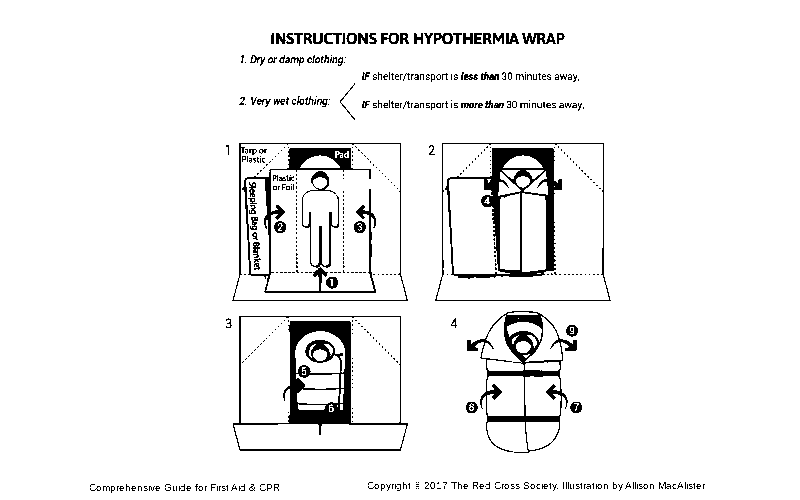

hypothermia
There are four levels of hypothermia, from mild to severe life-threatening symptoms:
- Cold stressed, not hypothermic: conscious, normal movement, shivering, and alert.
- Mild hypothermia: conscious, impaired movement, shivering, alert
- Moderate hypothermia: conscious, impaired movement, little or no shivering, not alert
- Severe hypothermia: cold, unconscious.
- Cold-Shock Response: Rapid cooling of the skin causes a gasp followed by hyperventilation (lasting 1-2 min).
- Cold Incapacitation: Further cooling of nerve and muscle fibres causes weakness and a loss of coordination, leading to incapacitation within approximately 15 minutes.
- Hypothermia: A person dressed appropriately for the weather conditions will take 30 minutes + to become mildly hypothermic.
- Circum-Rescue Collapse: Can occur just prior to, during, or after rescue. The signs and symptoms range from collapsing, to fainting, to cardiac arrest. When rescuing a person from cold water, monitor the person’s condition carefully and be prepared to provide emergency care.
If you are in OPEN WATER you can increase your survival time while waiting for rescue by doing the following:
- With a PFD, adopt the Heat Escape Lessening Position (HELP):
- Press your arms against your armpits.
- Place your forearms across your chest.
- Squeeze your thighs together and raise your knees toward your chest.
- If several people are in the water together, adopt the huddle position:
- Face each other
- Have each person squeeze their thighs together
- Form a circle and hug each other. Each person should place one arm above and one arm below the arms of those adjacent, and pull the sides of the chests together
- Sandwich any children or persons without a PFD inside the huddle.
- Get out of the water as much as possible by using a capsized boat or other floating object as a flotation device.
Caring for hypothermia
Care for hypothermia varies depending on the severity of the symptoms mentioned earlier (cold stressed/not hypothermic, mild hypothermia, moderate hypothermia and severe hypothermia):
- Cold stressed, not hypothermic
- Reduce heat loss, add dry clothing.
- Give high-calorie food or drink (warm, sugary, non-alcoholic)
- Increase heat production (exercise, e.g., run in place)
- Mild hypothermia
- Handle person gently, keep horizontal
- No standing/walking for at least 30 min
- Insulate the person/vapor barrier (hypothermia wrap, see below)
- Give high-calorie food or drink (warm, sugary, non-alcoholic)
- Monitor until improvement for 30 min
- Moderate hypothermia
- Handle person gently, keep horizontal
- No standing/walking
- Insulate the person/vapor barrier (hypothermia wrap, see below)
- No drink or food
- Apply heat to upper torso, by applying warm water bottles, or heating pads (i.e., the armpits, chest, and upper back). Body heat from yourself can also work in an emergency
- Severe hypothermia
- Treat as moderate hypothermia
- If no obvious vital signs, do 60-second breathing check
- If not breathing, start CPR
HYPOTHERMIA WRAP
Applying a hypothermia wrap, or hypothermia 'burrito', is an excellent way to reduce the heat lost by a person with hypothermia.
It consists of layering insulation and heat-reflecting material. If help is more than 30 minutes away (common on offshore boats), protect the person from the environment, remove the wet clothing and put them in a hypothermia wrap.
To apply a hypothermia wrap:
- Insulation pad. Place it between the person and the ground/floor.
- Sleeping bag/blanket. Wrap the person, apply as much insulation as possible.
- Hat or hood. Cover person's head/neck with a toque, heavy hat, or hood.
- Vapour barrier. If the person is dry, place the vapour barrier outside of the insulation wrap. If the person is wet, place the vapour barrier inside the insulation wrap. If two vapour barriers are available, place one inside and one outside the insulation wrap. A vapour barrier can be a plastic tarp or foil blanket.